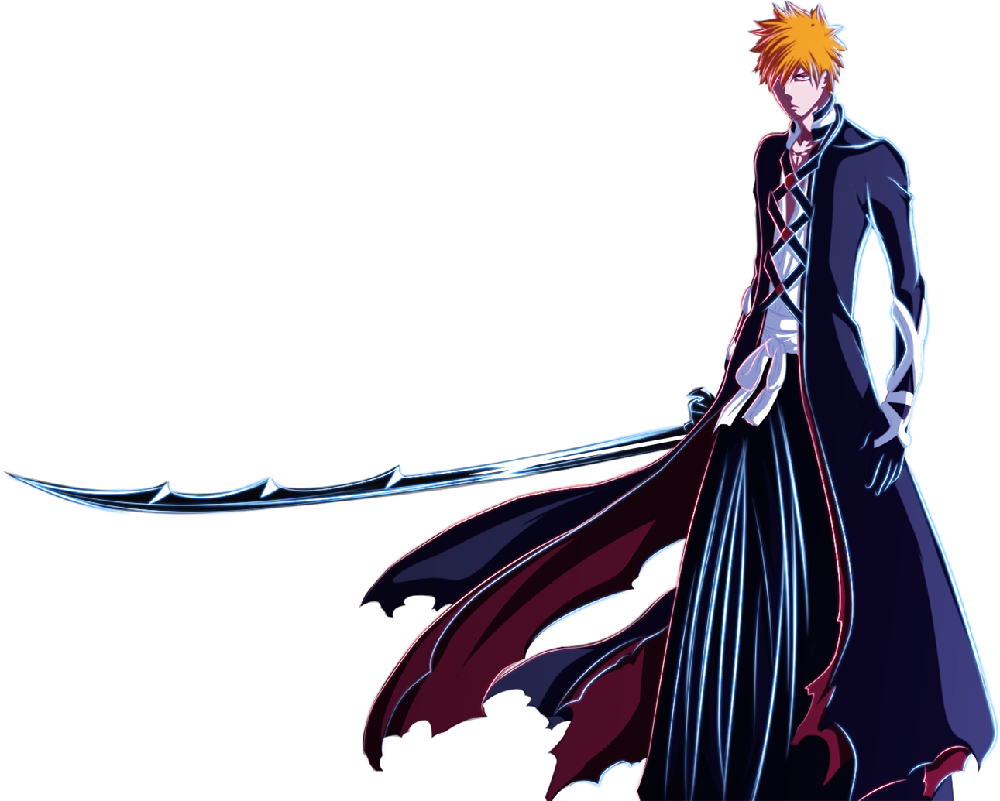

Ichigo Kurosaki (黒崎 一護, Kurosaki Ichigo) es el protagonista principal de Bleach. Ichigo es un Humano que también trabaja como Shinigami Sustituto. Ichigo es el hijo de Isshin y Masaki Kurosaki, y hermano mayor de Karin y Yuzu. También está casado con Orihime Inoue y tiene un hijo llamado Kazui Kurosaki.

Zangetsu (斬月, Luna Cortante) es la Zanpaku-tō de Ichigo Kurosaki, el personaje principal de Bleach. Su espíritu es el primero en aparecer en la serie, así como el que un mayor peso ostenta a lo largo de la historia.
En su forma espiritual, Ichigo lleva el traje de Shinigami y porta su Zanpaku-tō en la espalda. cruzando del hombro derecho a la cadera izquierda. Inicialmente se trataba de una funda atada con un cinturón marrón para sostener su Zanpaku-tō , pero al liberar el shikai, la Zanpaku-tō se envolvía en la cinta que salía de su empuñadura y la correa se convirtió en un rosario rojo.
La propietat justify-content alinea els elements al llarg de l'eix principal, que normalment és l'horitzontal. La propietat align-items alinea els elements al llarg de l'eix creuat, que normalment és el vertical. Aquests eixos poden canviar si es modifica la direcció amb flex-direction.